Fundador
[EVIDENCIA REQUERIDA] Nombre y rol
[EVIDENCIA REQUERIDA] Dos frases: transformaciones lideradas, dominios y tipo de decisión en la que aporta criterio.
La mayoría de las empresas ya tiene acceso a la IA. Lo que falta es la distancia entre un modelo capaz de ejecutar una tarea y una empresa capaz de usar esa capability de manera responsable, repetible y a escala.
Cerrar esa distancia exige cambios en roles, datos, workflows, controles y ownership. Por eso trabajamos dentro del operating model, no al lado de él.
The transformation happens inside.
No entregamos un roadmap y salimos. El blueprint entra a producción.
La capability vive dentro del workflow real, con controles y medición.

El trabajo termina cuando la capability pertenece a la empresa.
Las biografías comienzan por outcomes de transformación y capacidad ejecutiva, no por historiales laborales extensos.
Fundador
[EVIDENCIA REQUERIDA] Dos frases: transformaciones lideradas, dominios y tipo de decisión en la que aporta criterio.
Liderazgo
[EVIDENCIA REQUERIDA] Dos frases: capability construida, sector y responsabilidad operativa.